ডাটাবেস ডায়াগ্রাম ও ডাটা ডিকশনারি
ডাটাবেস: MySQL / MariaDB (InnoDB,
utf8mb4)। সার্ভার চালু হলেই সব টেবিল নিজে তৈরি/হালনাগাদ হয় (schema.sql+ প্রতিটি মডিউলেরensure*Schema())। এই ডকুমেন্টের সংখ্যাগুলো চালু সার্ভারেরinformation_schemaথেকে নেওয়া (২৫ অক্টোবর ২০২৬), হাতে লেখা নয়।
১. এক নজরে
| বিষয় | সংখ্যা |
|---|---|
| টেবিল | ২১৫ |
| কলাম | ২,৩০৩ |
| ঘোষিত Foreign Key | ২৪৯ (ON DELETE: CASCADE ১৪৪, SET NULL ৯১, RESTRICT ১৪) |
company_id আছে এমন টেবিল (multi-company) |
৫২ |
| ফাইল/ছবি ডাটাবেসেই রাখা হয় (BLOB কলাম) | ২৮টি কলাম (ডকুমেন্ট, ছবি, স্বাক্ষর, মেইল সংযুক্তি, সার্টিফিকেট) |
| সবচেয়ে বেশি কলামের টেবিল | users (৬২), all_employees (৪৯), payrolls (৪১) |
১ক. পুরো ডাটাবেস এক ছবিতে (সব ২১৫ টেবিল)
full-diagram.html: ব্রাউজারে zoom, টেনে সরানো ও টেবিলের নাম খুঁজে হাইলাইট করা যায় (ইন্টারনেট লাগে না)। প্রিন্ট/প্রেজেন্টেশনের জন্য:
PDF (ভেক্টর, যত খুশি zoom) · SVG · PNG · Graphviz সোর্স

- ১৩টি রঙিন বাক্স = ১৩ মডিউল। মাঝখানে
users(সব মডিউল এর সাথে জোড়া)। - প্রতিটি টেবিলে PK (লাল), FK (নীল), আর কয়েকটি মূল কলাম; বাকি কলাম "… +N কলাম" হিসেবে সংক্ষেপে, পুরোটা
data-dictionary.md-তে। - সরল রেখা = ঘোষিত foreign key (২৪৯টি), ধূসর ডটেড = যুক্তিগত সম্পর্ক (কোডে মানা হয়, ডাটাবেসে ঘোষিত নয়)।
users-এ যাওয়া "কে বানিয়েছে/অনুমোদন করেছে" রেখাগুলোও এখানে আঁকা, তাইusers-এর চারপাশে ঘন।

২. মডিউল মানচিত্র
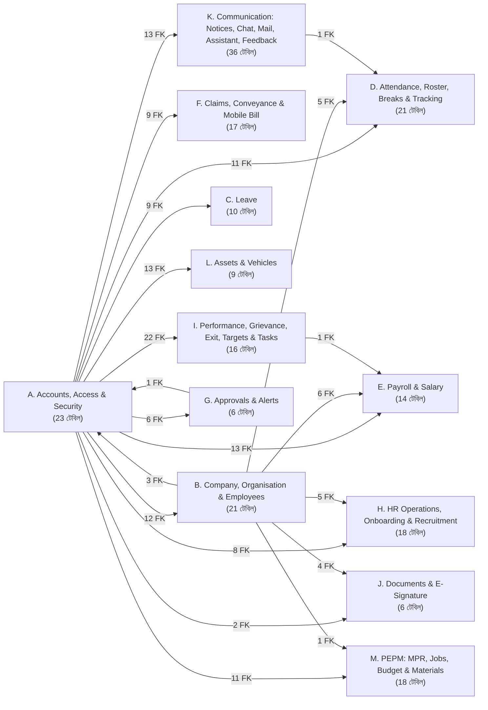
তীরের পাশের সংখ্যা = ওই দুই মডিউলের মধ্যে কয়টি foreign key। বড় SVG

৩. মূল ধারণাগুলো (ডাটাবেস বুঝতে প্রথমে এগুলো)
usersবনামall_employees:users= যে লগইন করে (পাসওয়ার্ড, role, অনুমতি)।all_employees= HR-এর কর্মী রেকর্ড (পদবি, বিভাগ, যোগদান, ব্যক্তিগত তথ্য)। একজন কর্মীর লগইন না-ও থাকতে পারে; থাকলেall_employees.user_id→users.id।- Multi-company: ৫৬টি টেবিলে
company_id। এটা ডাটাবেসের foreign key নয়, কোডে প্রয়োগ হয় (companyScope.tsপ্রতিটি SQL-এ নিজে থেকে কোম্পানির ফিল্টার বসায়)। তাই diagram-এcompany_idলাইন আঁকা হয়নি। - অনুমতি টেবিল:
admin_module_permissions(কোন Admin কোন মডিউল),admin_module_permission_layers(মডিউলের ভেতরে কোন কাজ)। বিস্তারিত:../security/। - ঋণ/বেতন রেকর্ড সুরক্ষা: বেতন ও সেবা-রেকর্ডের টেবিল (
payrolls,salary_structures,hr_actions,hr_letters,employee_transfers,employee_advancesইত্যাদি) থেকেall_employees-এ foreign keyON DELETE RESTRICT(EmployeeRecordsGuard.ts, প্রতিবার চালুর সময় নিশ্চিত করা হয়)। কর্মী মুছতে গেলে ডাটাবেস নিজেই আটকায়। - ফাইল রাখার ধরন: আলাদা ফাইল সার্ভার নেই। ফাইল base64 হয়ে এসে ডাটাবেসের BLOB কলামে থাকে। তাই ব্যাকআপ মানেই ডাটাবেস ব্যাকআপ।
- নামের নিয়ম: সব টেবিল
snake_case, প্রাইমারি কীid(auto-increment), সময়:created_at/updated_at। তারিখ API-তে"YYYY-MM-DD"স্ট্রিং। - কিছু সম্পর্ক ঘোষিত foreign key নয় (কোডে মানা হয়)। diagram-এ এগুলো ডটেড (...) রেখায়। যেমন
*_by(কে বানিয়েছে/অনুমোদন করেছে) কলাম diagram-এ দেখানো হয়নি, ডাটা ডিকশনারিতে আছে।
৪. মডিউল অনুযায়ী ডায়াগ্রাম
প্রতিটি diagram-এ: PK, FK আর কয়েকটি মূল কলাম। ধূসর রেখা = ঘোষিত foreign key, ডটেড = যুক্তিগত সম্পর্ক। অন্য মডিউলের টেবিল শুধু id সহ দেখানো। পুরো কলাম তালিকা data-dictionary.md-তে।
K. Communication: Notices, Chat, Mail, Assistant, Feedback (36টি টেবিল)
নোটিশ, Chat, Credence Mail (সবচেয়ে বেশি টেবিল), Assistant, Feedback।
মূল টেবিল: notices, chat_*, mail_*, assistant_*

এই মডিউলের সব টেবিলের নাম
`app_feedback`, `assistant_learned`, `assistant_support_messages`, `assistant_support_sessions`, `chat_message_hidden`, `chat_message_reactions`, `chat_messages`, `chat_pinned_messages`, `chat_push_tokens`, `chat_room_members`, `chat_room_reads`, `chat_rooms`, `chat_wallpapers`, `feedback_prompts`, `feedback_settings`, `mail_accounts`, `mail_admin_log`, `mail_blobs`, `mail_contacts`, `mail_events`, `mail_files`, `mail_filters`, `mail_folder_state`, `mail_groups`, `mail_messages`, `mail_personal_groups`, `mail_settings`, `mail_signature_images`, `mail_system_settings`, `mail_tasks`, `mail_templates`, `mail_vacation_log`, `notice_dismissals`, `notice_targets`, `notices`, `report_email_log`H. HR Operations, Onboarding & Recruitment (18টি টেবিল)
HR কাজ (পদোন্নতি, বদলি, increment, চিঠি), নতুন কর্মীর onboarding, নিয়োগ।
মূল টেবিল: hr_actions, hr_letters, onboarding_applications, job_postings, job_candidates
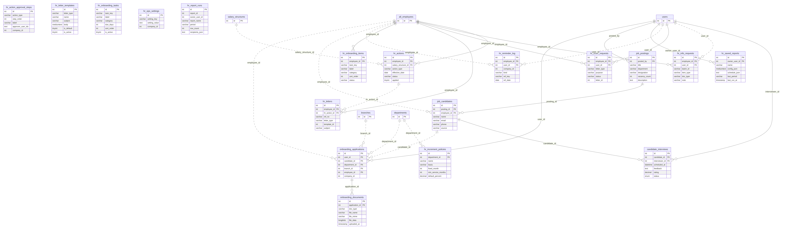

এই মডিউলের সব টেবিলের নাম
`candidate_interviews`, `hr_action_approval_steps`, `hr_actions`, `hr_increment_policies`, `hr_info_requests`, `hr_letter_requests`, `hr_letter_templates`, `hr_letters`, `hr_onboarding_items`, `hr_onboarding_tasks`, `hr_ops_settings`, `hr_reminder_log`, `hr_report_runs`, `hr_saved_reports`, `job_candidates`, `job_postings`, `onboarding_applications`, `onboarding_documents`D. Attendance, Roster, Breaks & Tracking (21টি টেবিল)
তিন ধরনের উপস্থিতি (রিমোট GPS, অফিস ZKTeco, সাইট muster roll), রোস্টার, বিরতি, লাইভ লোকেশন।
মূল টেবিল: attendance, zk_attendance_logs, site_attendance_*, duty_roster, employee_breaks
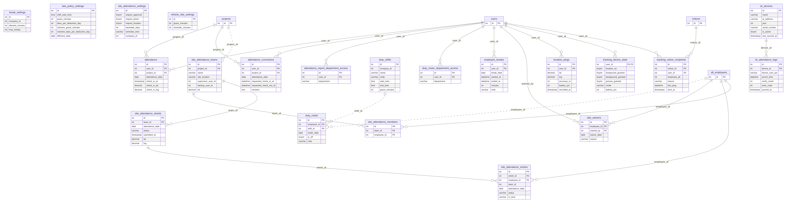

এই মডিউলের সব টেবিলের নাম
`attendance`, `attendance_corrections`, `attendance_report_department_access`, `break_settings`, `duty_roster`, `duty_roster_department_access`, `duty_shifts`, `employee_breaks`, `late_policy_settings`, `late_waivers`, `location_pings`, `site_attendance_entries`, `site_attendance_members`, `site_attendance_settings`, `site_attendance_sheets`, `site_attendance_teams`, `tracking_device_state`, `tracking_notice_recipients`, `vehicle_ride_settings`, `zk_attendance_logs`, `zk_devices`A. Accounts, Access & Security (23টি টেবিল)
লগইন অ্যাকাউন্ট ও কে কী করতে পারবে। পুরো ডাটাবেসের কেন্দ্র users (১৫৮টি foreign key এখানে এসে মেলে)।
মূল টেবিল: users (লগইন), user_sessions, user_devices, admin_module_permissions(+_layers), login_attempts, password_reset_*
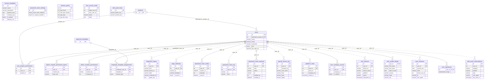

এই মডিউলের সব টেবিলের নাম
`access_templates`, `admin_module_permission_layers`, `admin_module_permissions`, `employee_template_assignments`, `fingerprint_logins`, `login_attempts`, `password_reset_codes`, `password_reset_log`, `password_reset_requests`, `password_reset_settings`, `payroll_access_log`, `platform_visits`, `session_policy`, `user_access_audit`, `user_company_access`, `user_devices`, `user_profile_details`, `user_project_permissions`, `user_sessions`, `user_signatures`, `users`, `web_push_keys`, `web_push_subscriptions`M. PEPM: MPR, Jobs, Budget & Materials (18টি টেবিল)
প্রজেক্ট কেনাকাটার চক্র: MPR সারি → Dispatch → Receive।
মূল টেবিল: jobs, entries, budgets, mpr_numbers, mpr_dispatches
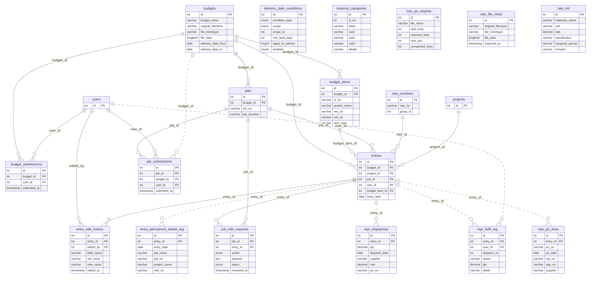

এই মডিউলের সব টেবিলের নাম
`budget_items`, `budget_submissions`, `budgets`, `delivery_date_conditions`, `entries`, `entry_edit_history`, `entry_permanent_delete_log`, `job_edit_requests`, `job_submissions`, `jobs`, `material_categories`, `mpr_dispatches`, `mpr_fulfil_log`, `mpr_numbers`, `mpr_po_imports`, `mpr_po_lines`, `rate_file_meta`, `rate_list`F. Claims, Conveyance & Mobile Bill (17টি টেবিল)
Movement claim, Conveyance Bill Claim (employee claim → approval → bill → disbursement), মোবাইল বিল।
মূল টেবিল: claims, user_claims, conveyance_bills, mobile_sims, bill_claim_*
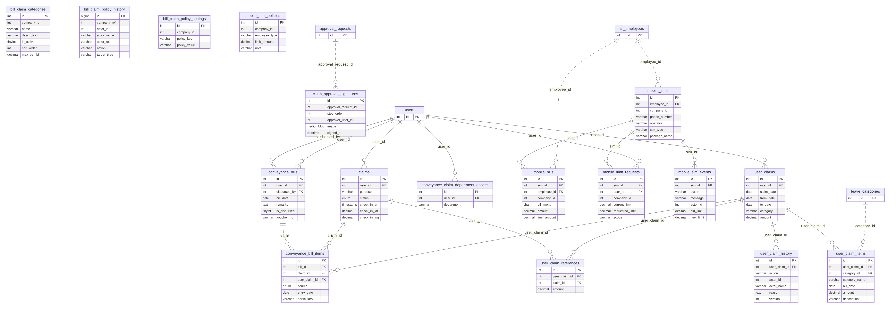

এই মডিউলের সব টেবিলের নাম
`bill_claim_categories`, `bill_claim_policy_history`, `bill_claim_policy_settings`, `claim_approval_signatures`, `claims`, `conveyance_bill_items`, `conveyance_bills`, `conveyance_claim_department_access`, `mobile_bills`, `mobile_limit_policies`, `mobile_limit_requests`, `mobile_sim_events`, `mobile_sims`, `user_claim_history`, `user_claim_items`, `user_claim_references`, `user_claims`B. Company, Organisation & Employees (21টি টেবিল)
কোম্পানি-গ্রুপ, সংগঠন কাঠামো আর কর্মীর মূল রেকর্ড। users = লগইন, all_employees = HR-এর কর্মী-রেকর্ড; all_employees.user_id দিয়ে জোড়া।
মূল টেবিল: companies, departments, branches, projects, all_employees, employee_*, hr_emp_*
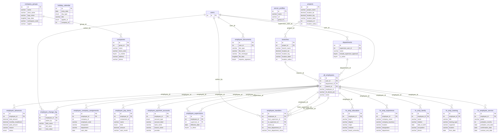

এই মডিউলের সব টেবিলের নাম
`all_employees`, `branches`, `companies`, `company_groups`, `departments`, `employee_advances`, `employee_change_log`, `employee_company_assignments`, `employee_documents`, `employee_pay_items`, `employee_payment_accounts`, `employee_supervisors`, `employee_transfers`, `holiday_calendar`, `hr_emp_education`, `hr_emp_experience`, `hr_emp_family`, `hr_emp_training`, `hr_employee_service`, `projects`, `server_profiles`C. Leave (10টি টেবিল)
ছুটির ধরন, নীতি, ব্যালেন্স ও আবেদন।
মূল টেবিল: leave_applications, leave_balances, leave_categories, leave_category_policies
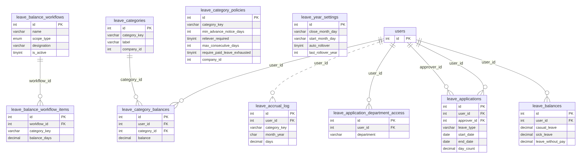

এই মডিউলের সব টেবিলের নাম
`leave_accrual_log`, `leave_application_department_access`, `leave_applications`, `leave_balance_workflow_items`, `leave_balance_workflows`, `leave_balances`, `leave_categories`, `leave_category_balances`, `leave_category_policies`, `leave_year_settings`L. Assets & Vehicles (9টি টেবিল)
অফিস সম্পদ ও গাড়ি।
মূল টেবিল: assets, asset_requisitions, vehicles, vehicle_requisitions
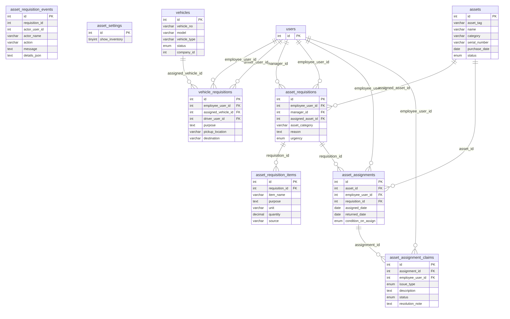

এই মডিউলের সব টেবিলের নাম
`asset_assignment_claims`, `asset_assignments`, `asset_requisition_events`, `asset_requisition_items`, `asset_requisitions`, `asset_settings`, `assets`, `vehicle_requisitions`, `vehicles`J. Documents & E-Signature (6টি টেবিল)
Document Vault আর ডিজিটাল স্বাক্ষর।
মূল টেবিল: employee_documents, document_signers, document_signatures, esign_certificates
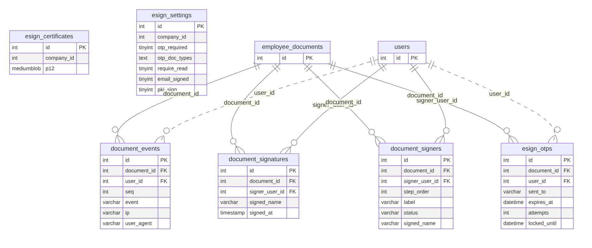

এই মডিউলের সব টেবিলের নাম
`document_events`, `document_signatures`, `document_signers`, `esign_certificates`, `esign_otps`, `esign_settings`E. Payroll & Salary (14টি টেবিল)
বেতন কাঠামো থেকে payslip ও final settlement পর্যন্ত। payrolls একজন কর্মী ও একটি মাসে একটি (UNIQUE)।
মূল টেবিল: salary_structures, payrolls, payroll_batches, final_settlements, employee_advances
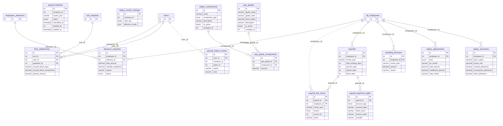

এই মডিউলের সব টেবিলের নাম
`advance_requests`, `final_settlements`, `pay_grade_components`, `pay_grades`, `payroll_batch_events`, `payroll_batches`, `payroll_line_items`, `payroll_payment_splits`, `payrolls`, `pending_bonuses`, `salary_adjustments`, `salary_components`, `salary_month_settings`, `salary_structures`I. Performance, Grievance, Exit, Targets & Tasks (16টি টেবিল)
কর্মজীবনের বাকি অংশ: মূল্যায়ন, অভিযোগ, শৃঙ্খলা, বিদায়, লক্ষ্য ও কাজ।
মূল টেবিল: performance_*, grievances, exit_requests, final_settlements, targets, tasks
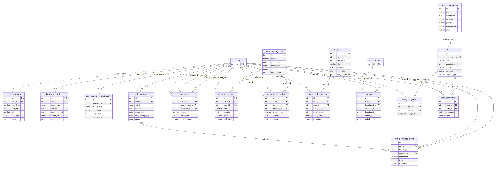

এই মডিউলের সব টেবিলের নাম
`case_feedback`, `disciplinary_actions`, `exit_clearance_approvers`, `exit_clearance_items`, `exit_requests`, `grievances`, `performance_cycles`, `performance_goals`, `performance_reviews`, `target_task_updates`, `target_tasks`, `targets`, `task_assignees`, `task_comments`, `task_recurrences`, `tasks`G. Approvals & Alerts (6টি টেবিল)
সব অনুমোদন-প্রবাহের সাধারণ ইঞ্জিন আর নোটিফিকেশন।
মূল টেবিল: approval_templates, approval_requests, alerts
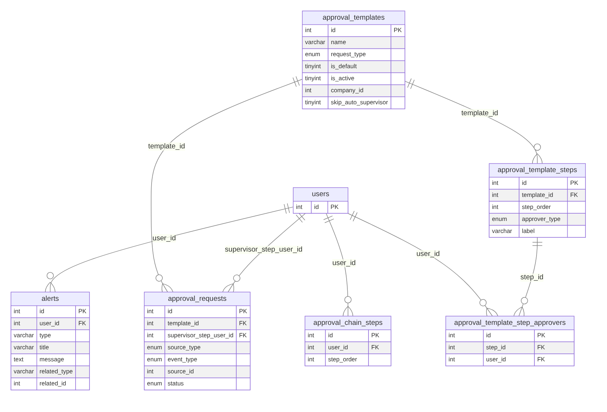

এই মডিউলের সব টেবিলের নাম
`alerts`, `approval_chain_steps`, `approval_requests`, `approval_template_step_approvers`, `approval_template_steps`, `approval_templates`৫. ফাইল
| ফাইল | কী |
|---|---|
data-dictionary.md |
২১৫ টেবিলের সব কলাম, ধরন, null, ডিফল্ট, সম্পর্ক |
diagrams/*.mmd |
Mermaid সোর্স (ডায়াগ্রাম আবার বানাতে) |
diagrams/*.svg, *.png |
তৈরি ছবি (প্রেজেন্টেশনে ব্যবহার করুন) |
full-diagram.html, diagrams/full-application-er.* |
পুরো ডাটাবেসের এক ছবি (HTML viewer, PDF, SVG, PNG) |
../index.html |
সব ডকুমেন্ট ব্রাউজারে (ইন্টারনেট ছাড়াই) |
৬. ডায়াগ্রাম নতুন করে বানাতে
নিজে থেকেই হয়: কোডে টেবিল বদলালে GitHub-এর Docs sync কাজটি সার্ভার চালিয়ে information_schema পড়ে এই পেজ, ডিকশনারি, সব ছবি ও draw.io ফাইল আবার বানায়। হাতে চালাতে: চালু MariaDB-তে সার্ভার একবার চালিয়ে npm run docs:db (বিস্তারিত ../README.md-এর "স্বয়ংক্রিয় আপডেট")।
draw.io ফাইল
credencehr-database.drawio — draw.io (diagrams.net) এ খোলা ও এডিট করা যায়।
১৪টি পেজ: পেজ ১ = সম্পূর্ণ ডাটাবেস (২১৫ টেবিল), বাকি ১৩টি = মডিউল অনুযায়ী।
টেবিলে শুধু মূল কলাম (PK/FK/মূল ফিল্ড) আছে; পূর্ণ কলাম তালিকা data-dictionary.md তে।
জেনারেটর: ../tools/db/drawio_* (npm run docs:db নিজে চালায়)।